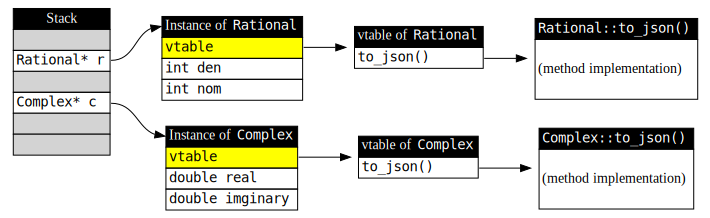
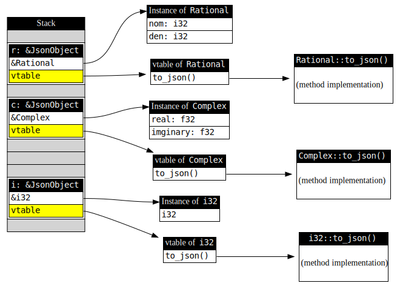

給 C++ 使用者的 Rust 簡介：物件導向篇
物件導向程式設計 (Object-Oriented Programming) 目前仍然是最主流的編程範式 (Programming Paradigm)，因此 Rust 也提供了物件導向程式語言最核心的幾項功能：封裝、繼承、多型。然而，在 Rust 中定義成員函式的語法與 C++ 有段差距，它的物件模型與實現繼承的方法也明顯異於 C++ 或大多數主流的物件導向程式語言。在這篇文章中，我將會詳細說明在 Rust 中實現物件導向的方法。
封裝
在之前文章的範例中，我們經常使用 struct，讀者可能會以為 Rust 就如同 C++ 那般，所有 struct 成員都是公開的 (public)。但實際上，Rust 的 struct 成員僅對同一個模組 (module) 內的程式碼公開。而所謂的模組，其實就是 C++ 的命名空間 (namespace)：
mod mylib { struct Rational { // 有理數 num: i32, // 分子 den: i32, // 分母 } fn new_rational() -> Rational { return Rational { num: 3, den: 5 }; // OK } } fn main() { let r = mylib::Rational { num: 3, den: 5 }; // error: struct `Rational` is private }
mod 關鍵字非常接近 C++ 的 namespace，它除了用來區分命名空間以避免撞名，還具備了封裝的功能。在 mylib 中的符號是不對外開放的，只有在同一個模組中的函式才能使用。
我們可以用 pub 關鍵字來公開符號：
mod mylib { pub struct Rational { num: i32, den: i32, } pub fn new_rational(num: i32, den: i32) -> Rational { return Rational { num: num, den: den }; } } fn main() { let r = mylib::new_rational(3, 5); // OK println!("fraction number is {}/{}", r.num, r.den); // 錯誤：num 與 den 皆未公開 }
成員函式與建構式
物件導向中的封裝原則告訴我們：使用者不需要也不應該去了解物件內部的實作細節，因此型別的設計者應該禁止使用者直接存取內部成員，而是讓他們透過公開的成員函式進行操作。
我們可以用 impl 關鍵字為某個型別定義成員函式：
mod mylib { pub struct Rational { num: i32, den: i32, } fn gcd(mut x: i32, mut y: i32) -> i32 { // 求取 x 與 y 的最大公因數，這裡省略實作 // ... } impl Rational { pub fn new(n: i32, d: i32) -> Self { Rational { num: n, den: d } } pub fn is_integer(&self) -> bool { self.den == 1 } pub fn reduce(&mut self) { let d = gcd(self.num, self.den); self.num /= d; self.den /= d; } } } fn main() { let r = mylib::Rational::new(3, 5); }
只要對任何型別使用 impl 區塊定義函式，這些函式就會成為該型別的成員函式[1]。以這個例子來說，Rational 型別就有三個成員函式：new、is_integer 與 reduce。而成員函式的第一個參數，則代表的這個成員函式如何影響物件：
- 如果第一個參數是
&self，表示這個成員函式不會改變物件內的狀態，相當於 C++ 中以const修飾的成員函式 (const member function)。self在 Rust 中也是個關鍵字，相當於 C++ 中的this。需注意的是，在成員函式中也必需透過用self才能存取物件的其它成員。 - 如果第一個參數是
&mut self，表示這是一個會修改物件內部狀態的成員函式，相當於 C++ 中未以const修飾的一般成員函式。 - 如果第一個參數不是
self，表示這是一個靜態成員函式 (static member function)。 - 除了用
self代表this以外，你還可以用大寫的Self來代表這些成員函式所屬的類別，以這個範例來說Self就等於Rational。
另外，在 Rust 中物件的建構式[2] (constructor) 其實就是回傳該物件的靜態成員函式，Rust 並未規定建構式要叫什麼名字，不過大部份人會依照慣例，使用 new 這個名字當作建構式。上述的成員函式定義，如果翻譯成 C++ 會長這個樣子：
#![allow(unused)] fn main() { namespace mylib { class Rational { private: int32_t num; int32_t den; public: Rational(int32_t n, int32_t d) : num(n), den(d) { } bool is_integer() const { return this.den == 1; } void reduce() { auto d = gcd(this.num, this.den); this.num /= d; this.den /= d; } } } }
繼承與多型
與大多數 OOP 語言不同的是，Rust 並沒有繼承結構成員的功能，你沒辦法如同 C++ 那樣直接讓某個新類別擁有另一個父類別的所有成員[3]。然而 Rust 可以宣告抽象介面，並且指定某個型別必需實作介面中的函式，這點非常接近 Java 或 C# 裡面的 interface。
宣告抽象介面的方法，是使用 trait 關鍵字：
#![allow(unused)] fn main() { trait JsonObject { fn to_json(&self) -> String; } }
這相當於用 C++ 宣告一個抽象類別：
#![allow(unused)] fn main() { class JsonObject { public: virtual std::string to_json() const = 0; }; }
你不能在 trait 中宣告成員變數，或是為函式提供實作。Trait 的目的，是為編譯器提供這個型別的介面資訊，不同的 struct 可以提供介面相同，但內容不同的實作，這樣只需要抽換實作，就可以達到程式碼再利用的目的。
你可以用 impl 與 for 關鍵字，讓某個型別實作 trait：
struct Rational { num: i32, den: i32, } impl Rational { fn new(n: i32, d: i32) -> Rational { Rational { num: n, den: d, } } } impl JsonObject for Rational { fn to_json(&self) -> String { // 因為 JSON 格式中有許多雙引號，我們可以用 r#"..."# 作為格式字串的前後引號 // r#"abc"def"ghi"# 相當於 "abc\"def\"ghi" // 另外大括號在格式字串中有特殊意義，因此需要使用 {{ 或 }} 表達單一的大括號 format!(r#"{{ "num":{},"den":{} }}"#, self.num, self.den) } } fn main() { let r = Rational::new(3, 5); println!("serialized result: {}", r.to_json()); // { "num":3,"den":5 } }
當然，你可以用其它型別來實作 JsonObject，它代表了任何可以輸出成 JSON 格式的型別。
#![allow(unused)] fn main() { // 表示複數型別 struct Complex { real: f64, imaginary: f64, } impl Complex { fn new(r: f64, i: f64) -> Complex { Complex { real: r, imaginary: i, } } } impl JsonObject for Complex { fn to_json(&self) -> String { format!(r#"{{ "real":{},"imaginary":{} }}"#, self.real, self.imaginary) } } }
你可以使用 &JsonObject 來代表一個實作出 json() 介面的物件，並且以多型的方式呼叫它：
fn dump_json(obj: &JsonObject) { println!("{}", obj.to_json()); } fn main() { let r = Rational::new(5, 7); let c = Complex::new(3.0, 4.0); dump_json(&r); // { "num":5,"den":7 } dump_json(&c); // { "real":3,"imaginary":4 } }
因為我們不知道具體型別是什麼，因此虛擬函式呼叫 (virtual method invocation) 只能在指向某物件的指標上實現，這也是為什麼 dump_json 的兩個參數型別都是 &JsonObject，而且在呼叫時，我們必需用 & 符號取得 r 與 c 的位址。
使用參考就會受到生命週期的限制，而改用智慧指標可以省去許多麻煩。Rust 的智慧指標與多型操作搭配良好，因此你可以用 Box<JsonObject> 來指向任何實作 JsonObject 介面的物件。
fn dump_json_array(array: &[Box<JsonObject>]) { print!("["); // 為了正確輸出 JSON 陣列中的逗號，我們使用 split_first() // 若陣列包含一個以上的元素，會回傳第一個元素及剩下的片段，否則傳回 None match array.split_first() { Some((first, remain)) => { print!("{}", first.to_json()); // 第一個元素前不需加逗號 for obj in remain.iter() { print!(",{}", obj.to_json());// 剩下的元素需要以逗號區隔 } } None => (), // array 為空 } println!("]"); } fn main() { let mut v: Vec<Box<JsonObject>> = Vec::new(); v.push(Box::new(Rational::new(5, 7))); v.push(Box::new(Complex::new(3.0, 4.0))); dump_json_array(&v); }
注意在兩個 push 操作中，我們實際上推了兩個不同型別的元素進去，但因為 Rational 與 Complex 都是 JsonObject 的子型別，因此 Box<Rational> 與 Box<Complex> 可以安全地轉型成 Box<JsonObject>，並且放進同一個容器中。當然，因為我們推了兩個不同型別的元素，導致 Rust 無法正確推導出 Vec 容器的型別，因此我們在宣告時必需明確指出 v 的型別是 Vec<Box<JsonObject>>。
擴充基本型別
Rust 的基本型別與自訂型別地位相同，你也可以替基本型別定義成員函式，甚至讓他實作某個 trait。比如說，我們可以讓最常見的 i32 實作 JsonObject：
#![allow(unused)] fn main() { impl JsonObject for i32 { fn to_json(&self) -> String { self.to_string() } } }
或是讓內建的 String 型別也實作 JsonObject：
#![allow(unused)] fn main() { impl JsonObject for String { fn to_json(&self) -> String { // 為字串前後加上雙引號，並加上跳脫字元 format!("\"{}\"", self.replace("\\", "\\\\").replace("\"", "\\\"")) } } }
這意味 Box<i32> 與 Box<String> 可以安全地轉型為 Box<JsonObject>：
fn main() { let mut v: Vec<Box<JsonObject>> = Vec::new(); v.push(Box::new(1)); v.push(Box::new(2)); v.push(Box::new("hello".to_string())); v.push(Box::new("world".to_string())); dump_json_array(&v); // [1,2,"hello","world"] }
為某個具體型別實作 trait 有一個限制：為了避免多個實作互相衝突，實作 trait 的 impl 區塊必需與 trait 或是具體型別擺在同一個函式庫 (Rust 稱之為 crate) 當中。簡而言之：
| 你寫的 trait | 別人寫的 trait | |
|---|---|---|
| 你寫的型別 | 👌 | 👌 |
| 別人寫的型別 | 👌 | ⛔ |
Trait 的實作
Rust 允許我們擴充所有已存在的型別，讓它們可以實作出新的界面，這點對熟悉 C++ 的讀者來說頗為神秘：為了達成多型，物件中必需有額外欄位指向虛擬函式表 (vtable)，才能在執行時期將同名的函式呼叫分派到不同類別的實作當中，如下圖：
 C++ 物件有額外欄位指向虛擬函式表
在 C++ 中，由於虛擬函式表的位址固定儲存在物件實體上，因此沒有預留這個空間的內建型別，自然就沒辦法添加任何虛擬成員函式。而其它的類別雖然可以透過多重繼承的方式為其添加界面，但必然要修改既有的程式碼。
Rust 雖然也有虛擬函式表，但並不把它的位址儲存在物件中，而是把它與 trait 參考放在一起，如下圖：
 Rust 的 trait 參考結構
從這張圖可以看出，任何指向 trait 的參考，其實會佔用兩個指標，其中一個指向物件實體，另一個指向虛擬函式表。這樣的作法雖然會增加記憶體使用量，但換來了極佳的彈性。即使是其他人製作的型別，你也可以自由擴充它。
Trait 在泛型程式設計 (generic programming) 中也扮演重要角色，我會在後續的文章中詳細介紹。
解構式
你可以實作 Drop trait，這麼一來型別就有了解構式，允許你使用 C++ 中常見的 RAII 手段管理資源。
struct DatabaseSession { connection: i32, // connection 代表底層的資源 } impl DatabaseSession { fn new() -> Self { DatabaseSession { connection: connect(/* ... */), // 連接 server } } fn do_something(&self) { // ... } } impl Drop for DatabaseSession { fn drop(&mut self) { disconnect(self.connection); // 關閉連線 } } fn main() { let session = DatabaseSession::new(); session.do_something(); // ... // session 離開 scope 時會自動呼叫 drop() 釋放資源 }
所有實作 Drop trait 的物件在生命週期結束時，編譯器會自動為它呼叫 drop() 以釋放資源。當然，即使你沒有實作 Drop，但物件中包含了實作 Drop 的成員，那麼當物件的生命週期結束時，編譯器也會自動地呼叫這些成員的解構式。
在 C++ 中，只要你心臟夠大顆，可以直接呼叫物件的解構式，只是你得自行避免物件在解構後又被拿來用，或是出現重覆解構的情況。在 Rust 中你也可以手動呼叫 drop 來解構物件，但編譯器知道你解構了物件，因此會阻止你做出危險行為。
fn main() { let session = DatabaseSession::new(); // ... drop(session); // 解構 session 物件，釋放其資源 session.do_something(); // 錯誤：session 已解構 drop(session); // 錯誤：session 已解構 // 函式結束時不會再呼叫 session 的解構式 }
Move Semantics
在 C++ 中有所謂的「三位一體原則」(rule of three) 或「五位一體原則」(rule of five)，意思是如果某個類別定義瞭解構式，那麼一定也要定義出複製建構式 (copy constructor) 並覆載等號賦值 (copy assignment)，否則這個物件很容易因為複製出暫時物件，而導致解構式重覆釋放了內部資源。
#![allow(unused)] fn main() { class DatabaseSession { private: int connection; public: DatabaseSession() : connection( connect(/* ... */) ) // 連接 server {} ~DatabaseSession() { disconnect(connection); // 中斷連線 } } int main() { auto session = DatabaseSession(); auto another = session; // 內部的 connection 被複製了 return 0; // main 結束時，session 與 another 被解構，導致同一個 connection 被重覆關閉 } }
Rust 沒有這樣的規則。在預設情況下，包括 struct 在內的所有自訂型別都具備 move semantics，因此使用等號賦值，或是用 by-value 方式傳遞到函式內，都會導致所有權轉移。只要變數失去了所有權，在它生命週期結束時就不會呼叫解構式，從而避免重覆釋放資源的問題。
fn main() { let s1 = DatabaseSession::new(); // ... let s2 = s1; // 所有權轉移至 s2 身上 s1.do_something(); // 錯誤：s1 已失去所有權 foo(s2); // s2 所有權轉移到函式中 // 函式結束時，s2 所擁有的資源已被釋放 // main 結束時，不會呼叫 s1 與 s2 的解構式 } // 看起來 session 是 call-by-value，但其實應該叫 call-by-move // 因為呼叫端的所有權傳進了這個函式 fn foo(session: DatabaseSession) { session.do_something(); // 離開函式時會解構 session }
如果你自己設計了某些方法來複製資源，比如說額外再增加一個連往相同 server 的連線，Rust 的慣例是實作 Clone trait：
impl Clone for DatabaseSession { fn clone(&self) -> Self { let addr = get_server_info(self.connection); return DatabaseSession { connection: connect(addr), // 增加一個連往相同目標的連線 }; } } fn main() { let s1 = DatabaseSession::new(); // ... let s2 = s1.clone(); // s2 是新連線 s1.do_something(); // s1 仍然可用 // s1 與 s2 是不同連線，都會被解構式釋放 }
有些型別的成員都是單純資料 (POD, plain old data)，實作 Clone 時也都只有單純的欄位複製，我們可以用 #[derive(Clone)] 讓編譯器自動幫我們實作出逐欄位複製的 clone()：
#[derive(Clone)]
struct Rational {
num: i32,
den: i32,
}
fn main()
{
let r1 = Rational::new(5, 3);
let r2 = r1.clone(); // r2 直接複製 r1 的所有成員
let r3 = r1; // 轉移 r1 所有權到 r3 身上
}
Clone trait 仍然會保留 move semantics，因此使用等號直接賦值時仍然會導致所有權轉移。如果我們想表達型別完全就是 POD，可以直接用等號直接複製其內容，而不需要轉移所有權，只要再加上 Copy trait 即可：
#[derive(Copy,Clone)]
struct Rational {
num: i32,
den: i32,
}
fn main() {
let mut r1 = Rational::new(/* ... */);
let r2 = r1; // r2 複製 r1 的內容
r1.reduce(); // 還是可以繼續使用 r1
foo(r1); // 以 call-by-value 的方式呼叫
}
fn foo(r: Rational) {
// ...
}
Copy 的意思是該型別遇到等號賦值或 call-by-value 的函式傳遞時，會直接呼叫 clone() 創造出複本，因此 Copy 是 Clone 的子集合，實作 Copy 的型別一定要實作 Clone。
運算子複載 (Operator Overloading)
Copy 與 Clone 其實就相當於 C++ 中覆載 (overload) 等號賦值的行為。那麼 Rust 可以覆載其它的運算子嗎？答案是肯定的，而且也是透過 trait。
比如說，實作 Add trait，我們的型別就可以透過加號進行運算：
use std::ops::Add; impl Add for Rational { type Output = Self; // 相當於 typedef Rational Output fn add(self, rhs: Self) -> Self { Self { // 通分相加 num: self.num * rhs.den + self.den * rhs.num, den: self.den * rhs.den, } } } fn main() { let r1 = Rational::new(1, 2); let r2 = Rational::new(1, 3); let r3 = r1 + r2; // r3 = { num: 5, den: 6 } }
在 impl 區塊中，我們除了定義 Rational 的加法外，還定義了 Output 這個型別，代表加法的輸出型別。儘管這個 trait 的成員函式 add() 的回傳型別已經說明瞭 Rational 相加的結果仍然是相同的 Rational，因此這邊定義 Output 似乎有點多此一舉，但我們等一下就會看到它的用處。
當然，我們可以讓 Rational 與其它型別相加：
#![allow(unused)] fn main() { impl Add<Complex> for Rational { type Output = Complex; fn add(self, rhs: Complex) -> Complex { // 轉成浮點數後相加 let f = (self.num as f64) / (self.den as f64); return Complex { real: f + rhs.real, imaginary: rhs.imaginary, }; } } }
當不同的型別可以透過運算子覆載進行操作時，往往會讓我們搞不清楚輸出型別，而難以在必要的地方標示型別。比如說我們寫了一個函式把許多 Rational 與 Complex 加起來：
fn sum_all(ra: &[Rational], ca: &[Complex]) -> ? {
// ...
}
我們知道這兩個型別可以相加，但相加後的型別又是什麼？當然我們可以翻閱文件後填一個正確的型別上去，但如果未來輸出型別有更改，那麼這段函式定義也得跟著改才行。所幸，Add trait 中的 Output 可以幫我們解決這個問題：
#![allow(unused)] fn main() { fn sum_all(ra: &[Rational], ca: &[Complex]) -> <Rational as Add<Complex>>::Output { // ... } }
回傳型別看起來很複雜，它想表達的是「在 Rational 對 Add<Complex> 的實作中，所定義的 Output 型別」。因此，編譯器會抓出對應的 impl 區塊，找到裡面的 Output 作為這個函式的回傳型別。
儘管運算子覆載是個大家爭論不休的語言功能，但它在泛型程式設計中確實佔了重要地位，有興趣的讀者可以參考 std::ops 的文件，上面列出你可以覆載的運算子。幸運的是，C++ 中邪惡的逗號 (,) 與邏輯運算 (&& 與 ||) 並不在其中。[4]
結語
本文介紹了在 Rust 中實現物件導向程式設計的方法。Rust 引入了 trait、禁止類別繼承、又讓自訂型別擁有 move semantics，是與 C++ 相當不同的設計。然而在 RAII 與運算子覆載上，又可以處處看見 C++ 的影子。
在下一篇文章中，我會介紹另一種重要的自訂型別：列舉 (enum)，以及搭配它的樣式比對 (pattern matching)。
- Rust 使用 method 這個 OOP 中的主流用語來表達成員函式 (member function)，不過這篇文章的主要對象是 C++ 使用者，因此我會繼續使用「成員函式」。 ↩
- Constructor 這個字眼在 functional programming 中具有不同的含義，本篇文章中的 constructor 意指在 OOP 語言中，用來初始化物件的函式。 ↩
- Rust 鼓勵你用組合 (composition) 代替繼承，但你硬要做的話還是辦得到，方法是直接把一個父類別物件放進成員中，並且用它實作
Deref與DerefMuttrait。 ↩ - 覆載這些運算子會改變運算式的求值順序，導致難以名狀的 bug，詳情可參考 C++ 知名教科書 Effective C++。